Phil Storrs PC Hardware book
286 and 386 PC hardware
The second generation PC was the PC/AT and these computers used the 80286 processor. This generation of PC computer had a 16 bit external data bus and a 24 bit address bus. The bus connectors used in the first generation PC/XT had to be enhanced by the addition of the AT extensions to provide for the extra data and address lines, and more IRQ and DMA lines. Here is a PC/AT clone, usually just called a 286 computer, named after the 80286 processor used.
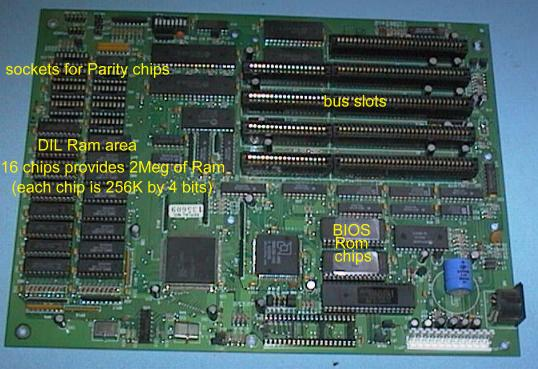
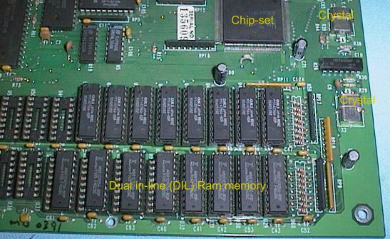
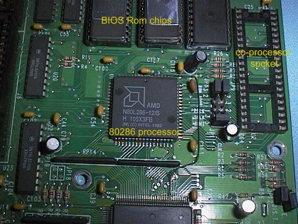
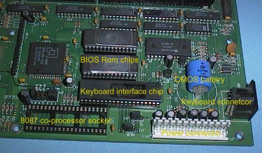
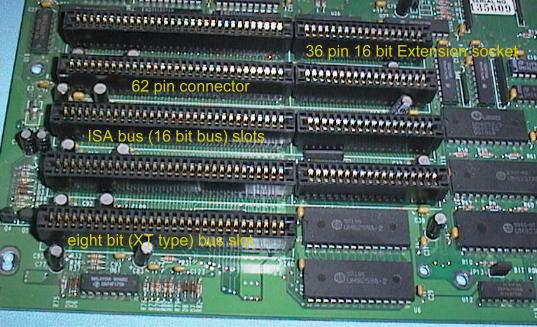
Early PC/AT (286) computers could only accommodate one or 2 Meg Byte of RAM memory on the System Board and so RAM Expansion boards were available. Here is an example of one such board.
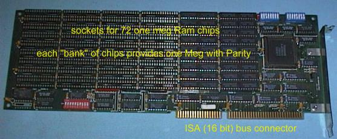
RAM on an card plugged into an ISA Bus slot is accessed at only 8 MHz, instead of the Internal Bus Speed of the computer. RAM on the System Board is on a "Local Bus" with the Processor and operates at the Bus Speed of the Processor.
IBM introduced a more advanced video system called EGA (Enhanced Graphics Adaptor) in 1983. The Video Interface card operated at resolutions up to 640 by 350 and supplied six "TTL" video signals to the Video Display Monitor via a DB9 connector. The six video signals meant an EGA card could provide 64 (6 2) colours if it was fitted with enough Video Memory.


The first 80386SX generation System Boards still used Dual In Line (DIL) RAM technology and also had sockets for Single Inline Package (SIP) devices.


The later System Boards were much smaller because of the use of SIMM RAM only, and the use of a more highly integrated Chipset. Older Chipsets required four device packages for the Chipset, later boards had a Chipset consisting of only one or two chips. This is an example of the last of the 80386SX System Boards.


This System Board has only four 30 pin SIMM sockets. The 80386SX processor accessed RAM 16 bits at a time and so two 30 pin SIMM RAM was required per bank of memory. Each SIMM is eight bits (nine bits with parity) wide.
The 80386DX processor introduced 32 bit busses to the PC computer. For a long time the 32 bit bus was only used internally on the System Board between the processor and the memory. The 16 bit ISA Bus continued to be used to connect peripherals via plug in cards. Here is one of the last of the 386DX generation of System Boards.
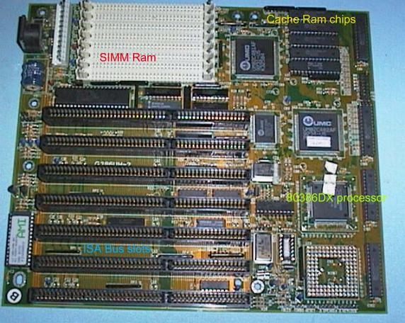
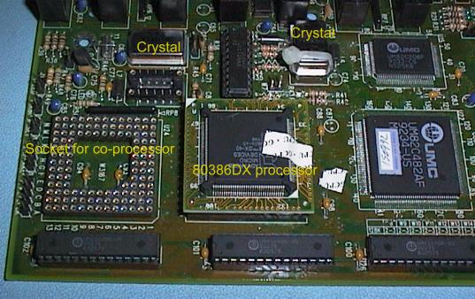
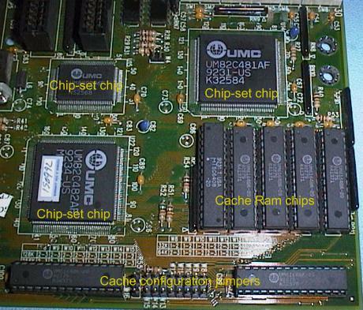
This is an 80386DX System Board and as this processor accesses RAM 32 bits at a time, four 30 pin SIMM RAM are required per bank of memory. Most 80386DX System Boards, had eight 30 pin SIMM sockets.
By the time the 386 was the most common computer, VGA Video was the most common video system in use. Unlike the earlier video systems, VGA uses analog video signals from the video card to the monitor. The high density or Miniature DB15 connector supplies three video signals, (red green and blue), and two synchronization signals, (horizontal and vertical), to the monitor.
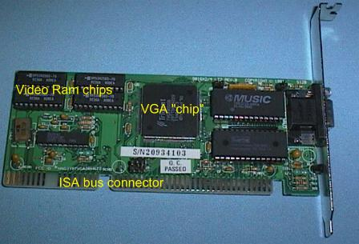
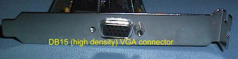
A Network card is a common option in modern PC computers. Two types of network cable are in common use. Coaxial wiring uses BNC connectors and twisted pair wiring uses RJ45 connectors.
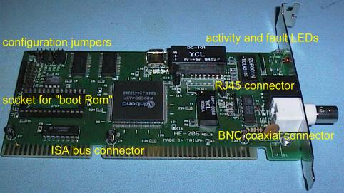
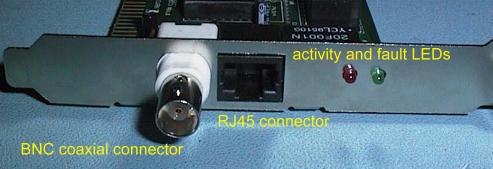
Copyright © Phil. Storr, last updated 26th December 1998